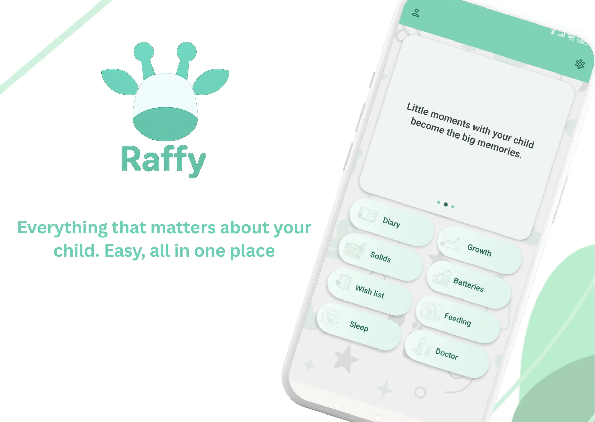

On this page · 4 sections
In short
Use quick web tools for one-off answers (a WHO percentile estimate, a weekly toddler menu) and the Raffy app for daily tracking, reminders and long-term patterns. This page is educational and non-diagnostic; for clinical concerns, consult your pediatric team.
Who this helps
- Parents who want one place to track sleep, feeds, diapers, growth and notes.
- Caregivers who need reminders and shared routines.
- Families that want fewer "start from zero" days.
Track it all in Raffy
Sleep, feeding, growth and routines in one free Android app.

When web tools are enough
- One-time checks like a WHO percentile estimate.
- Weekly menu planning for toddlers.
- Single planning sessions for wake windows or solids progression.
When app tracking is better
- You need history over days and weeks, not isolated snapshots.
- You want reminders for medicines, routines, and follow-ups.
- You need one timeline connecting sleep, feeding, symptoms, and growth.
Recommended workflow: web tools + Raffy app
- Start with a targeted tool for a fast answer.
- Move into Raffy app to log the daily routine and outcomes.
- Review trends weekly and adjust with your pediatric guidance.